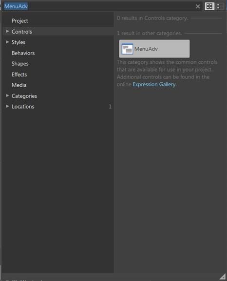
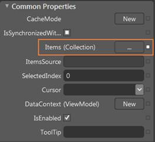
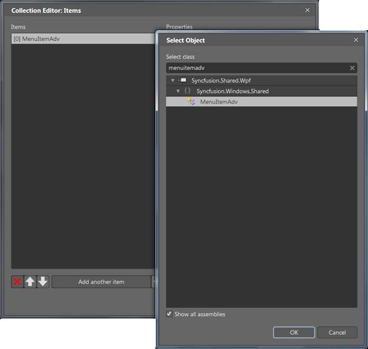
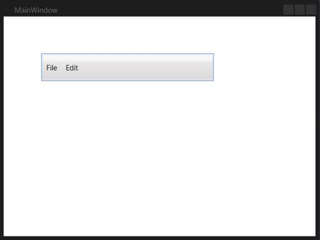

The MenuAdv control can also be created and configured using Expression Blend. The following are the steps to do so.
1. Create a WPF project in the Expression Blend and reference the following assemblies.
· Syncfusion.Shared.Wpf
· Syncfusion.Core
2. Search for MenuAdv in the Toolbox.

Figure 710: MenuAdv in Expression Blend Toolbox
3. Drag the MenuAdv to the designer. This will generate an empty menu bar.
4. To add the MenuItemAdvs to the MenuAdv control, select the MenuAdv and go to Properties area.
5. Click Items (Collection) under Common Properties.

Figure 711: MenuAdv properties
6. Once the Collection Editor opens, click Add another item. The Select Object window will open.
7. Select MenuItemAdv by typing MenuItemAdv in the search box, and then click OK.

Figure 712: Collection Editor for MenuAdv in Expression Blend
8. Configure the properties (such as header or icon) of the MenuItemAdv using the properties in the Collection Editor. This will generate the following control.

Figure 713: MenuAdv in Expression Blend Designer
 Note: You can customize the appearance of the
MenuItemAdv using the template-editing feature available in the Expression
Blend.
Note: You can customize the appearance of the
MenuItemAdv using the template-editing feature available in the Expression
Blend.